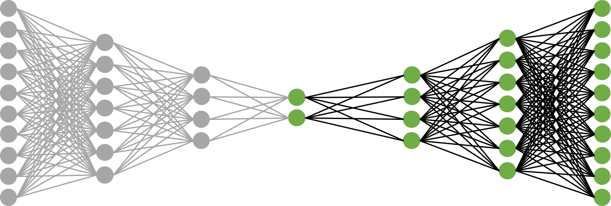

Autoencoders in PyTorch
Autoencoders can compress high-dimensional data into a low-dimensional embedding. They’re also useful for coming up with a latent feature space for image data. I used it as a method for mining morphological features of axon and dendrite terminals for a project related to neuron tracing. However, this post will just be a brief introduction to both autoencoders and PyTorch, and I’ll be using the MNIST dataset of handwritten digits for simplicity. Some people on this thread have constructed architectures using Tensorflow – I’ll be using their ideas and implementing them in PyTorch, with some added plots of my own that demonstrate the power of even a relatively simple network. You can find all the code in this Github repository.
Put simply, an autoencoder is a particular type of feed-forward network that learns a mapping from the input back on to itself (I’m assuming you understand what feed-forward networks do). The architecture I’ll be using will have five hidden layers, one of which is the “bottleneck” layer that represents the low-dimensional space into which our images will be projected. The network is symmetric and looks like the following:
Where He1, He2, Hd1, and Hd2 are the first and second hidden layers of the encoder and decoder. The encoder and decoder are just the two halves of the autoencoder, and they do exactly what you’re thinking they do: encode the data into a low-dimensional space, and project that low-dimensional data back into the original space. The left set of layers through the bottleneck comprise the encoder, and the right set of layers starting at the bottleneck comprise the decoder. I’ll construct separate networks for the encoder and decoder and stitch them together using PyTorch’s sequential model, since we’ll be applying both portions of the network separately after training.
Let’s start writing some code. PyTorch comes with several vanilla datasets that you can use to test your networks. We’ll use the MNIST dataset, which is composed of 60,000 training examples and 10,000 test examples, each of which is a 28 x 28 pixel image. Loading MNIST is not difficult, but it’s a good idea to normalize the data and convert it to a tensor, the data structure that PyTorch runs on:
def load_mnist():
"""Load and normalize the MNIST dataset."""
train_data = datasets.MNIST(root='./mnist/',
train=True,
download=True,
transform=ToTensor())
test_data = datasets.MNIST(root='./mnist/',
train=False,
download=True,
transform=ToTensor())
print("Training Data: {} / Labels: {}".format(train_data.data.size(),
train_data.targets.size()))
print("Test Data: {} / Labels: {}".format(test_data.data.size(),
test_data.targets.size()))
train_labels = train_data.targets
train_data = torch.tensor(train_data.data, dtype=torch.float) / 255.
test_labels = test_data.targets
test_data = torch.tensor(test_data.data, dtype=torch.float) / 255.
return train_data, train_labels, test_data, test_labels
# Load the MNIST dataset, and normalize
train_data, train_labels, test_data, test_labels = load_mnist()
# For mini-batch processing. Dimensions: (BATCH_SIZE, 28, 28)
loader = DataLoader(dataset=train_data,
batch_size=BATCH_SIZE,
shuffle=True,
num_workers=4)
In PyTorch, you can inherit from the Module class and overwrite the constructor and the forward method to dictate what your network architecture is and how tensors propagate through it. In the constructor for both the encoder and decoder, we’ll use 3 linear layers and apply elu activation functions as per the suggestions on the Stack Exchange thread above. However, when calling the network, we’ll allow the constructor to take the desired dimensions of the hidden layers as input so we can train on multiple architectures. Finally, our output will be a sigmoid function. Since the sigmoid’s range is between 0 and 1, data normalization is important.
class encoder(nn.Module):
def __init__(self, hidden_dim1, hidden_dim2, encoded_dim):
super(encoder, self).__init__()
# fce = fully-connected encoder layer
self.fce1 = nn.Linear(28 * 28, hidden_dim1)
self.fce2 = nn.Linear(hidden_dim1, hidden_dim2)
self.fce3 = nn.Linear(hidden_dim2, encoded_dim)
def forward(self, x):
x = F.elu(self.fce1(x))
x = F.elu(self.fce2(x))
x = self.fce3(x)
return x
class decoder(nn.Module):
def __init__(self, hidden_dim1, hidden_dim2, encoded_dim):
super(decoder, self).__init__()
# fcd = fully-connected decoder layer
self.fcd1 = nn.Linear(encoded_dim, hidden_dim2)
self.fcd2 = nn.Linear(hidden_dim2, hidden_dim1)
self.fcd3 = nn.Linear(hidden_dim1, 28 * 28)
def forward(self, x):
x = F.elu(self.fcd1(x))
x = F.elu(self.fcd2(x))
x = torch.sigmoid(self.fcd3(x))
return x
Finally, we’ll choose some hyperparameters for our training session. Our task isn’t a complicated one, so we’ll train on 50 epochs (probably a lot more than is necessary) with a learning rate of 0.01. We’ll use the Adam optimizer, the mean-squared error (MSE) as our loss function, and loop through 4 different network architectures. Network 1 has 1024 neurons in the first hidden layer and 512 in the second (for both the encoder and decoder); network 2 has 512 and 128; network 3 has 128 and 64; and network 4 has 64 and 32. The input and output dimensions of all networks is the same (28 * 28 = 784), and the bottleneck has two neurons representing the 2-dimensional embedded space.
BATCH_SIZE = 100
EPOCHS = 50
LEARNING_RATE = 0.001
def train(loader, optimizer, criterion, autoencoder):
"""Trains the given autoencoder using the data in loader, with a
specified optimizer and loss criterion."""
loss_history = np.zeros((1,))
for epoch in range(EPOCHS):
for i, batch_images in enumerate(loader):
# Dimensions of batch_images:
# torch.tensor(batch_size, 28, 28)
optimizer.zero_grad() # Reset the gradient
# Reshape the image dims
batch_images = torch.tensor(batch_images.view(\
BATCH_SIZE, 28 * 28), dtype=torch.float)
# Obtain output from current network
out = autoencoder(batch_images)
# Compare output with original images to generate loss
loss = criterion(out, batch_images)
# Perform backpropagation to get gradient
loss.backward()
# Apply gradient to update network parameters
optimizer.step()
loss_history = np.append(loss_history, loss.item())
print('epoch {}/{} \t Loss: {}'.format(epoch+1,
EPOCHS, loss.item()))
return autoencoder, loss_history, epoch
hidden1 = [1024, 512, 128, 64]
hidden2 = [512, 128, 64, 32]
encoder_dim = 2
network_names = ['autoencoder1.pt', 'autoencoder2.pt',
'autoencoder3.pt', 'autoencoder4.pt']
loss_histories = np.zeros((1, EPOCHS))
for i in range(4):
# Set up the network. Reference name != class name, so you can
# reset it each iteration
encoder_i = encoder(hidden1[i], hidden2[i], encoder_dim)
decoder_i = decoder(hidden1[i], hidden2[i], encoder_dim)
autoencoder_i = nn.Sequential(encoder_i, decoder_i)
print('\nNetwork architecture:'), print(autoencoder_i)
# Choose optimizer and loss criterion, and train network
optimizer = torch.optim.Adam(autoencoder_i.parameters(),
lr=LEARNING_RATE)
criterion = nn.MSELoss()
autoencoder_i, loss_history, epoch = train(loader, optimizer,
criterion, autoencoder_i)
loss_histories = np.row_stack((loss_histories, loss_history[1:]))
# Save network parameters
torch.save({'epoch': epoch,
'model_state_dict': autoencoder_i.state_dict(),
'optimizer_state_dict': optimizer.state_dict(),
'loss_history': loss_history[1:]}, network_names[i])
loss_histories = loss_histories[1:, :]
After training, we can also plot our loss history for each network. It hits the minimum pretty quickly and the final loss isn’t that small, but as we’ll see, the networks do a good job for demonstrative purposes using simple network architectures:
Technically I’ll be applying three different networks to my data (the autoencoder, the decoder, and the encoder), where the encoder and decoder share the corresponding learned parameters of the full autoencoder. We’ll start by using the autoencoder to check the integrity of our data compression. Let’s run the first 10 training samples through our trained autoencoder and compare our results to the original images:
The top row consists of the original images, and rows 2-5 contain the results of running these images through networks 1-4, respectively. Most of the numbers were compressed and de-compressed fairly accurately for all architectures, although the 5 was only represented well in the first network (the one with the most neurons). We haven’t even used any convolutional layers, and our data compression is already looking good given a sufficient number of nodes in the hidden layers. Obviously you’d want to use sophisticated approaches for more complex images, but at least our model is on the right track.
The Encoder
Since it looks like our inputs and outputs generally match, it’s reasonable to expect that the encoder has been sufficiently trained to perform dimensionality reduction. Let’s apply just the encoder to compress and plot our training data – you can find my approach in the repository code (and from here on out, we’ll use network 1):
Our data isn’t separated enough to apply a clustering algorithm, but as a sanity check, we have proof that the autoencoder is doing its job. With larger networks, the data separation gets a little better, so you can imagine the possibilities of using convolutional layers, more hidden layers, etc. to pick up additional features and thereby better cluster delineation. If the bottleneck has three layers, of course, you can plot 3-dimensional clusters as well:
I didn’t implement validation loss during training, but I did provide some qualitative proof that the network wasn’t overfitting. If we run the test data through the encoder and plot the results, we’ll get the following:
I’ve used the same colors corresponding to each number as above. Greyed-out points represent the nine other digits. The black crosses mark locations of the test data in the compressed space. For the 1’s (second plot), I’ve used white crosses instead so the data stands out better. As you can see, the test data overlaps nicely with the corresponding training data, so we know that the network is generalizing well.
The Decoder
Finally, let’s see how the data is being separated by running some 2-dimensional sample points through the decoder. The idea is to choose some points that aren’t necessarily compressed representations of the original images; we want to see if the network is indeed producing a spectrum of meaningful features. First, using the results of network 1, I’ve chosen 8 evenly-spaced points at a distance of 20 units from the origin, plotted below and labeled:
We’ll construct the decoder in a similar manner to the construction of the encoder. If we take these 8 points and run them through our decoder, we’ll get the following images:
As one would expect, the points generally represent the digit clusters they fall into. For example, points 1 and 8 (safely in the 1-cluster) come out looking like the digit 1, while point 5 (safely in the 0-cluster) looks like the digit 0. Interestingly, point 7 looks like a cross between a 2 and an 8, combining features of both digits. This makes sense because the point falls right in between the 2- and 8-clusters. One general observation is that negative x-features are loops and positive x-features are lines. Negative y-features tend to lack stems (as characteristic of digits 5, 8, and 2, for example), while positive y-features have them (as characteristic of digits 7 and 9). It’s hard to say exactly what’s going on – deep learning leverages the sheer complexity of neural networks to come up with relevant features on its own, and that’s certainly the case in this example.
Although the MNIST autoencoder is a vanilla example and has been applied countless times before, I hope that this post has shed some light into what’s going on and how versatile the model is. One can experiment with alternative activation functions and deeper networks, especially if the image data set becomes more complicated.
If you’re interested in picking up PyTorch, the website has some good tutorials that you can find here. Have fun.